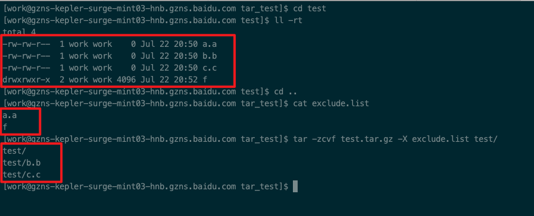

sed用法
打印第n行到最后一行的内容
sed -n ‘1673523, $p’ bs.gi.log > /home/work/qhl/bs.gi.log打印匹配abc的行到最后一行的内容。
sed -n ‘/abc/,$p’ file.txt
注意是单引号- 匹配特定字符串
1
echo $line | sed 's/pattern//g'
eg1
echo 'DB_TYPE_ARR1: rts-weibo:0.80, dnews-weibo:0.80' |grep DB_TYPE_ARR | sed 's/DB_TYPE_ARR//' | sed 's/:[0-9].[0-9]\+//g'
- 替换换行
1
sed ':a;N;$!ba;s/\n/ /g'
示例追加：1
2$ echo -e "1\n2" | sed ':a;N;$!ba;s/\n/ /g'
1 2
替换某个字符串
将某个文件中的jack字符串替换为tom1
sed -i "s/jack/tom/g" test.txt
如果替换字符串中有”/“的替换
要使用#来替换1
sed -i 's#origin/string#newstring#g'file_name
eg 如果一个路径是data/path/abc,现在要将此路径换成一个字符串cde1
sed -i 's#data/path/abc#cde#g' file_name
shell 10进制转16进制
1 | echo 10 | awk '{printf ("%x\n", $0)}' |
tar 用法
- 打包排除某些文件或文件夹
tar -zcvf test.tar.gz -X exclude.list test/
其中exclude.list里面包含了那些你不想要的文件或是文件夹

字符串前面补0
start=printf "%02d" "$i"
shell for循环
for ((i=0; i<60; i++));
do
echo $i;
done
vim配置
vim配置显示中文1
2
3
4
5
6
7
8
9
10
11
12
13
14
15
16syntax on
filetype indent plugin on
set modeline
set tabstop=4
set expandtab
set softtabstop=4
set shiftwidth=4
set nonumber
set cmdheight=1
set laststatus=2
set fileencodings=utf-8,gb2312,gb18030,gbk,ucs-bom,cp936,latin1
set enc=utf8
set fencs=utf8,gbk,gb2312,gb18030
map <F4> <Esc>:%!python -m json.tool<CR>
set number
set expandtab ts=4 sw=4 sts=4 tw=100
copy文件
1 | rsync -avnL twemproxy --exclude=twemproxy/log work@host.com:/home/work/scp_tmp |
-avnL: 显示哪些要被copy，但是实际上并未执行copy，-avL是真的copy
随机数生成
使用系统的 $RANDOM 变量
1 | echo $RANDOM |
$RANDOM 的范围是 [0, 32767]
- 想生成2~10范围之间的随机数
1
echo $(($RANDOM%9+2))
获取函数的返回值
1 | #!/bin/bash |
如上代码会输出 15，17. 即通过全局变量的方式来获取函数的返回值
统计文件的大小
1 | du * -csh |
awk用法
awk 分割之后打印所有的列
1 | awk 'BEGIN{RS=""}{for(a=1;a<=NF;a++) print $a}' connext.txt |
查看进程系统运行时间
1 | ps -eo pid,lstart,etime,cmd | grep nginx |
杀进程吐core
1 | kill -4 pid |
kill -l 可以列出所有的数字信号代表的含义。
nc 命令
nc是netcat的简写，有着网络界的瑞士军刀美誉。因为它短小精悍、功能实用，被设计为一个简单、可靠的网络工具
nc的作用
（1）实现任意TCP/UDP端口的侦听，nc可以作为server以TCP或UDP方式侦听指定端口
（2）端口的扫描，nc可以作为client发起TCP或UDP连接
（3）机器之间传输文件
（4）机器之间网络测速
eg：开启http服务监听12345端口1
nc -l -p 12345
挂在分区，mount，umount分区
- 查看已挂载分区和文件系统类型
1
df -T
Filesystem Type 1K-blocks Used Available Use% Mounted on
/dev/sda1 ext4 20642428 3698868 15894984 19% /
tmpfs tmpfs 32947160 0 32947160 0% /dev/shm
格式化分区
1
sudo mkfs -t ext4 /dev/sde1
挂载分区
1
sudo mount -t ext4 /dev/sde1 /home/ssd1/
grep 命令
grep 正则某些字段，并且把其输出为同一行
有如下数据1
2
3
4id=13 name=xiaoming age=35
id=15 name=zhangsan age=33
id=17 name=lisi age=31
id=45 name=wangwu age=25
- 把grep出的两行合并为1行
1
grep -oP "(id=\d+)|(name=.+? )" info.txt
输出如下1
2
3
4
5
6
7
8id=13
name=xiaoming
id=15
name=zhangsan
id=17
name=lisi
id=45
name=wangwu
如下命令可以让其输出为一行数据1
grep -oP "(id=\d+)|(name=.+? )" info.txt | sed 'N; s/\n/ /g'
输出如下1
2
3
4id=13 name=xiaoming
id=15 name=zhangsan
id=17 name=lisi
id=45 name=wangwu
- 把grep出的三行合并为1行
命令1
grep -oP "(id=\d+)|(name=.+? )|(age=\d+)" info.txt
输出1
2
3
4
5
6
7
8
9
10
11
12id=13
name=xiaoming
age=35
id=15
name=zhangsan
age=33
id=17
name=lisi
age=31
id=45
name=wangwu
age=25
命令1
grep -oP "(id=\d+)|(name=.+? )|(age=\d+)" info.txt | sed 'N;N;s/\n/ /g'
输出1
2
3
4id=13 name=xiaoming age=35
id=15 name=zhangsan age=33
id=17 name=lisi age=31
id=45 name=wangwu age=2
也可以用 ‘\t’ 来替换1
grep -oP "(id=\d+)|(name=.+? )|(age=\d+)" info.txt | sed 'N;N;s/\n/\t/g
好的参考资料
- Shell脚本IF条件判断和判断条件总结 Shell脚本IF条件判断和判断条件总结